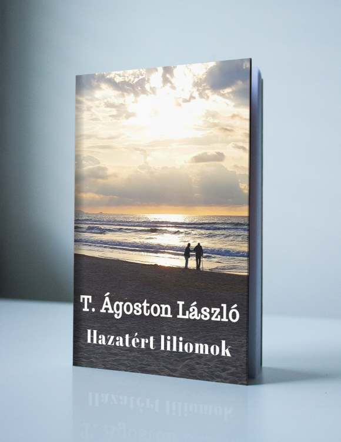
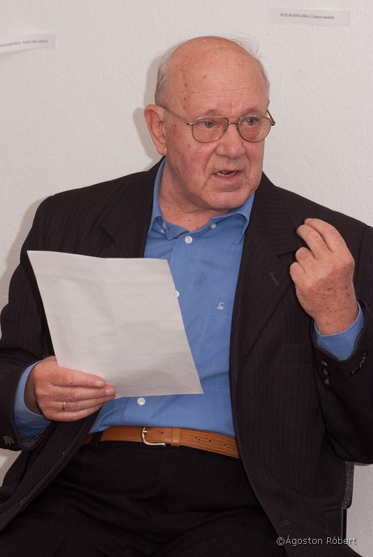
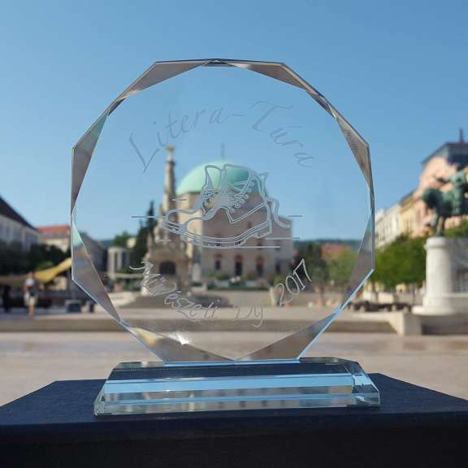
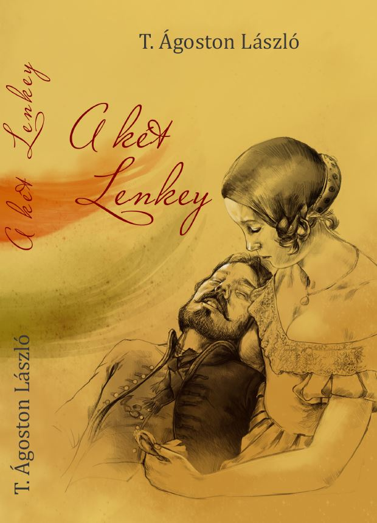
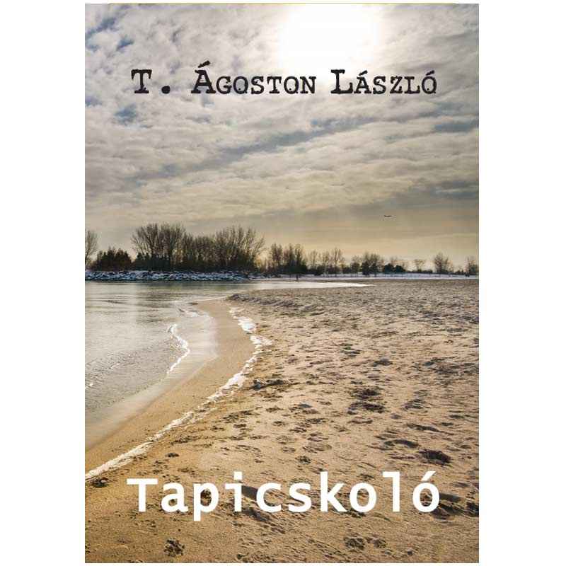
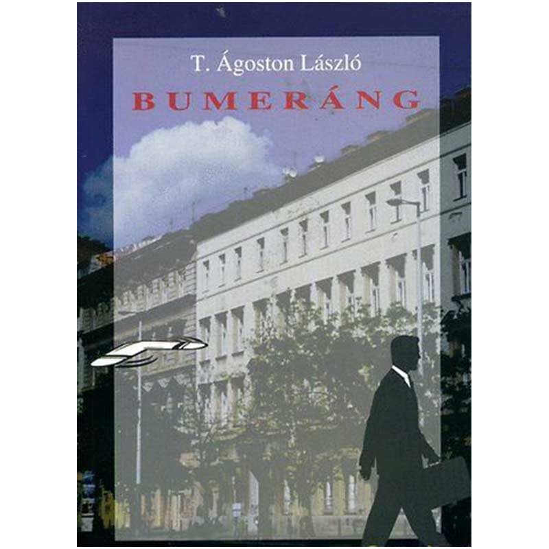
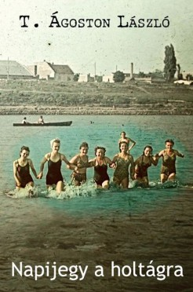

„És szólt az Úr, ujját levéve számról; mit láttál, most elmondhatod. Adott hozzá szót, ceruzát is, és maga nézte át a kéziratot. És adott hű társat, aki segít, rendelt mellém jó barátokat. Kertet, madárdalt, szép virágot, asztalomra kenyeret ─ no nem halomra, csak a mindennapit."
„Majd jött a kór, a fájdalom, testembe kín hasít. Uram, kímélj meg tőle ─ kértem Őt, de nem hallotta óhajom. Legyen hát meg az akarat, tégy szándékod szerint. A harcot lásd, én feladom, kezedbe adom sorsomat, s nem kérek már mást, Uram. Csak egyet adj meg még nekem, mit senki más nem adhat; taníts meg úgy, ahogy csak Te tudsz. Taníts, Uram, megbocsátani!"

Emlékkötet, 2017
Az író 2017. július 13-án elhunyt, de írásai tovább élnek. 2017. október 14-én, T. Ágoston László születésének 75. évfordulóján jelent meg Hazatért liliomok című novelláskötete, amely termékeny írói pályájának legsikeresebb alkotásait tartalmazza.

T. Ágoston László író, újságíró (1942. október 14. – 2017. július 13.) Tasson született, apja, nagyapja asztalosműhelyében nevelkedve nemcsak a szakma fortélyait próbálta ellesni, hanem a műhelyben megforduló kuncsaftok, az egyszerű falusi emberek adomáit is. Asztalos ugyan soha sem lett belőle, de a műhelyben hallott történetek évtizedek múltán is visszaköszönnek novelláiban, elbeszéléseiben.
1970-től újságíró. 1971–73-as évfolyamban végezte el az újságíró iskolát, majd 36 évesen főiskolai diplomát szerzett. Üzemi, intézményi lapok munkatársaként, szerkesztőjeként dolgozott. Több író és költő barátjával 1982 őszén megalakították a Krúdy Gyula Irodalmi Kört, amelynek alapító titkára volt.
Első novellája 1966. decemberében jelent meg a Csepel újságban, a következő ötven évben írásait közölte a Népszava, Népszabadság, megyei lapok, Somogy, Hévíz, Polisz, Ezredvég, Új Horizont, Keresztény Élet, Amerikai Magyar Népszava és más lapok.

Rendeléshez vegye fel velünk a kapcsolatot a Kapcsolat szekcióban.
emlékkötet
2 690 Ft

történelmi nagyregény
3 100 Ft

verseskötet
1 550 Ft

novellák
1 300 Ft

verseskötet
1 550 Ft
Levélcím: 1174 Budapest, Baross u.8. I. 5.
E-mail: info@tagostonlaszlo.hu
A honlapot üzemelteti: Dulcinea Event Bt.
Cégjegyzékszám: 01-06-793408
Adószám: 26332835-1-42
Képviseli: Ágostonné Takács Erzsébet
Bankszámlaszám: 16200223-10082847 (Magnet Bank)